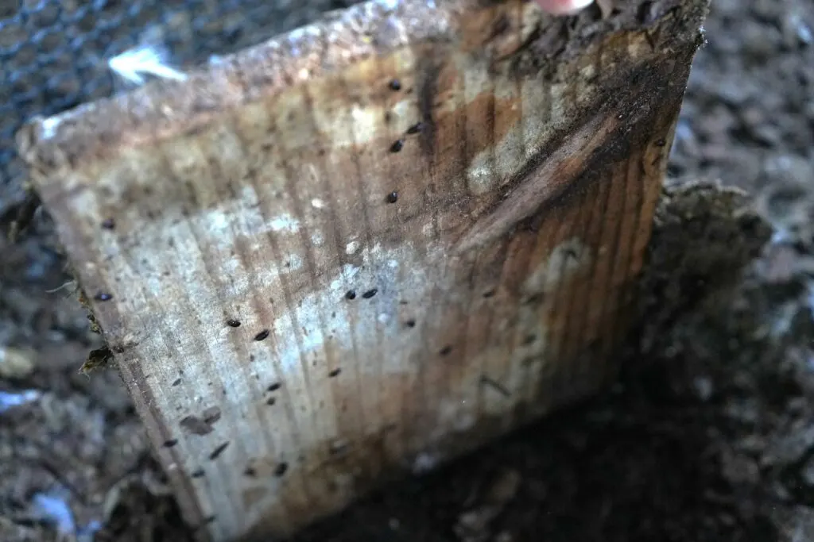

The next application of nanotechnology in agribusiness may begin on the floor of poultry houses. NanoBrasil and Sanex are developing a new version of a drying agent for poultry litter, formulated to extend microorganism control and improve the sanitary conditions of the environment where broilers are raised.
The project sums up NanoBrasil's way of working: starting from a concrete pain point in industry, bringing together those who master the product and the market, incorporating scientific knowledge and validating the solution under real conditions. Sanex contributes more than two decades of experience in environmental conditioners; NanoBrasil, its nanotechnology platform.
Farm trials are being conducted at the Federal University of Lavras (UFLA), with Brazil's leading reference on the subject, university professor Antônio Gilberto Bertechini – in benchmark facilities in the country.
“Today, we have customers who want a product with this profile. That was the main reason we approached NanoBrasil. We know nanoparticles have very strong antimicrobial capacity, and we want to extend the period of bacterial control in poultry litter,” says Marcelo Huber, veterinarian and executive director of Sanex.
A problem underfoot
Poultry litter is the layer of material covering the floor of the houses, in direct contact with the animals throughout the production cycle. When it accumulates moisture, droppings and organic matter, it can encourage the proliferation of bacteria and fungi, the release of ammonia, compaction of the material and the presence of the lesser mealworm, a beetle common in this environment.
The consequences go beyond the animals' discomfort. Excessively wet or compacted litter can contribute to foot lesions, such as pododermatitis, and increase exposure to infectious agents. The ammonia released by the decomposition of excreta can also irritate tissues and the respiratory system.

The problem returns with every cycle. Between one flock leaving and the next arriving, producers need to turn, treat and prepare the litter, as well as carry out cleaning and disinfection procedures. It is work that requires time, labor and proper management to reduce the pathogen load before the new chicks arrive.
“Managing poultry litter is a lot of work and takes up many of the producer's hours. When it isn't done well, the new flock may face problems right from the start. A conditioner that is easier to apply allows the producer to manage the litter faster and have time to take care of other stages in the poultry house,” explains Marcelo.
An established solution
The partnership does not start from scratch. Founded in 2003, Sanex develops and manufactures nutritional and zootechnical additives and environmental conditioners for animal production. The company has 16 distributors in Brazil, a team of approximately 30 professionals and is building a network to expand its presence in Latin America.
Its work with poultry litter began in 2007, when an exporting company approached Sanex looking for an alternative to the insecticides used against the lesser mealworm. The requirement was to control the insect without compromising the conditions needed to keep exporting its products.
The answer was Diatex, an environmental conditioner developed over two years with the participation of the Federal University of Paraná. The research resulted in a master's dissertation, and the product was registered with the Ministry of Agriculture in 2009.

The solution began to act on two important fronts: physical control of the lesser mealworm and reduction of litter moisture. As use expanded, the company also identified effects on the presence of microorganisms in the first days of rearing.
How the drying agent works
Diatex is made from three types of diatomaceous earth selected by Sanex from more than 20 materials analyzed. Diatomaceous earth is a natural mineral powder formed by fossilized microalgae structures, characterized by high porosity and absorption capacity.
Each raw material plays a role in the formulation. One has greater capacity to absorb water; another reacts with substances present in the litter and helps reduce ammonia release; the third helps limit the presence of certain bacteria.
On insects, the action is physical. The particles stick to the beetle's body, wear down the outer layer responsible for retaining water and absorb lipids from its surface. Without this protection, the insect loses moisture and dies of dehydration. Because the mechanism does not depend on insecticides, it leaves no chemical residues in the animals and reduces the risk of resistance developing.

Removing moisture also has an indirect effect on the environment. Bacteria and fungi that depend on humid conditions find it harder to multiply, while lower microbial activity reduces the conversion of the uric acid in droppings into ammonia.
The nanotechnology leap
Despite the results already achieved, there was a limit to overcome. According to Sanex, conventional Diatex can keep the so-called infection pressure – the presence of potentially harmful microorganisms – lower mainly during the chicks' first week of life. Some customers, however, need longer-lasting protection.
It was this need that brought the company to NanoBrasil. The idea is to incorporate nanoparticles with antimicrobial properties into the environmental conditioner, adding this action to its existing capacity to control moisture, ammonia and insects.
“Standard Diatex shows results on infection pressure for approximately seven days. With the development carried out with NanoBrasil, we aim to achieve 14, 15 or even 20 days of effect on the bacterial load. That is the gain we need to prove in the trials,” explains Marcelo.
The new formulation, which Sanex calls Diatex Especial, has already gone through laboratory evaluations. The current stage takes place on an experimental farm at UFLA, where researchers monitor the behavior of the litter and the effects of the technology under conditions close to those of commercial production.
Scale already available
Once the tests are completed, the technology will find a commercial structure ready to go. Sanex already manufactures all its products in-house and supplies drying agents to large agribusiness companies.
The new formulation will initially target operations that face higher infection pressure in the first days of rearing or that seek to reduce the use of chemicals in house management. It is not, therefore, about automatically replacing the conventional conditioner, but about creating a higher-performance solution for specific needs.
Barriers to adoption
Reaching the market, however, does not depend only on demonstrating effectiveness. Marcelo believes that some producers are still unaware of environmental conditioners or find it hard to believe that a smaller amount of a product developed specifically for this purpose can replace large volumes of traditional materials, such as lime.
Negative experiences with low-quality products also fuel resistance. When a solution without a proper formulation fails to deliver the expected result, the frustration can be generalized to the whole category.
The challenge therefore involves technology, evidence and communication. Performance needs to be demonstrated, but also translated into the producer's routine: ease of application, less operational effort, better litter conditions, less exposure of workers to irritating materials and health gains for the animals.
“There is still a lot of unfamiliarity with the technology and with the correct way to apply it. Sometimes the producer uses a low-quality product, gets no result and goes back to traditional solutions. That's why proof and technical guidance are so important,” says Marcelo.
Coordination as a method
The development shows that innovation does not necessarily come from a ready-made technology looking for a buyer. In this case, the path began with a need already identified by Sanex customers: extending microorganism control in poultry litter.
Sanex knew the pain point and had the product, the industrial capacity and access to the market. NanoBrasil identified how its nanotechnology could improve this solution and coordinated the scientific validation. UFLA completes the network by testing the development in an experimental setting, with the participation of technical references and relevant facilities in Brazilian poultry farming.
The expected result is not just a new drying agent. It is a technology built to respond to a real problem, with an industry capable of producing it, companies interested in using it and evidence to support its arrival on the market.
This is NanoBrasil's logic of coordination: connecting knowledge, research, production capacity and industrial demand so that nanotechnology stops being a possibility confined to the laboratory and becomes an applied solution – in this case, starting from the floor of poultry houses.